CS184/284A Fall 2026 Homework 3 Write-Up
Names: Bharagth Ravindhran
Link to webpage: https://cal-cs184-student.github.io/hw3-bha-writeup/
Link to GitHub repository: https://github.com/cal-cs184-student/hw3-bha
Overview
What I built
- I built a physically-based path tracer that generates camera rays per sample, intersects them with triangles and spheres through a BVH, and estimates radiance by recursively integrating the rendering equation.
- At each diffuse hit the estimator adds the surface emission, adds direct illumination sampled from the scene lights, then samples a cosine-weighted direction and continues the path. Bounce depth, accumulated and unaccumulated modes, and Russian roulette determine which bounces contribute, and adaptive sampling stops a pixel once its 95% confidence interval is small enough.
- The work is in
src/pathtracer/*(camera, ray generation, BSDF, direct and global illumination, adaptive sampling) andsrc/scene/*(triangle, sphere, bounding box, BVH).
My approach per part
- Part 1: I mapped normalized image coordinates to a sensor on the
z = -1plane, generated world-space rays, and implemented Möller–Trumbore triangle intersection and quadratic sphere intersection with interpolated and analytic normals. - Part 2: I built a binary BVH that splits the widest centroid axis at the centroid-box midpoint, with a median fallback, and wrote slab-method box tests plus early-out and closest-hit traversal.
- Part 3: I implemented the Lambertian BRDF
reflectance/PI, zero-bounce emission, and two direct-lighting estimators: uniform hemisphere sampling and light importance sampling. - Part 4: I implemented cosine-weighted BSDF sampling, recursive indirect radiance with accumulated and nth-bounce modes, and Russian roulette.
- Part 5: I added adaptive per-pixel sampling using incremental
s1/s2statistics and a 95% confidence-interval stopping test.
Problems and fixes
- Ray-depth off-by-one. My first version of the bounce logic treated
depthas "bounces already taken", so-m 1accidentally included an indirect bounce. I changed the camera ray's depth to start atmax_ray_depth, decremented it per recursion, and added the direct term at the current hit whendepth > 0. That made-m 1direct lighting and-m 2one indirect bounce. - Russian roulette killing the first indirect bounce. Applying RR to every ray made
-m 2occasionally collapse to a direct-only image. I now apply RR only whenr.depth < max_ray_depth, so the camera ray always traces at least one indirect bounce while deeper paths terminate early. - Parallel rays in the slab test. Dividing by a zero direction component produces
±infandinf - infNaN in the naive interval update. I detect the parallel case explicitly and accept the box only if the ray origin lies inside that slab, which keeps axis-aligned walls and the area light stable. - Adaptive-sampling edge cases. The statistics need at least two samples and a nonzero batch size, so I guard
samplesPerBatch > 0, only test convergence after a full batch, and divide the accumulated color by the actual sample countnrather than byns_aa.
What I learned
- I came away thinking of a path tracer as a chain of sampling decisions. In particular, where to start each camera ray, which direction it leaves a surface, whether a path should continue, and when a pixel has collected enough samples. Each part of the assignment changed one of those decisions, and the effect on the rendered image was immediate.
- The bounce-depth bookkeeping was the least intuitive part for me. I had to define
depthconsistently across the camera ray, the direct term, and the recursion before the-mand-oflags produced the images I expected. - Path-tracing noise comes from the randomness of
Monte Carlo sampling, not from the image resolution, so the useful question is how to choose
samples, not just how many to take. Brute-forcing more samples at every pixel has diminishing
returns because the error shrinks like
1/sqrt(N), while importance sampling and adaptive sampling reduce noise by aiming rays where the light is and spending samples where the estimate is still uncertain.
Part 1: Ray Generation and Scene Intersection
Ray generation and intersection pipeline
- I implemented
Camera::generate_ray(x, y)insrc/pathtracer/camera.cpp. It takes normalized image coordinates ((0,0)bottom-left,(1,1)top-right) and maps them to the virtual sensor on thez = -1plane in camera space:p_cam = ((2x-1) tan(hFov/2), (2y-1) tan(vFov/2), -1). I multiplied by the camera-to-world matrixc2wto get the world-space direction, normalized it, and set the ray origin to the camera positionposwithmin_t = nClipandmax_t = fClip. - I implemented the sampling loop in
PathTracer::raytrace_pixel(x, y)insrc/pathtracer/pathtracer.cpp. For each ofns_aasamples I jittered inside the pixel withgridSampler->get_sample(), normalized bysampleBuffer.w/h, generated a camera ray, evaluatedest_radiance_global_illumination, and accumulated the result. The average went intosampleBuffer. Part 5 later made this loop adaptive and filledsampleCountBuffer.
Triangle intersection
- I used Möller–Trumbore in
Triangle::has_intersectionandTriangle::intersect. Withe1 = p2 - p1,e2 = p3 - p1, ands = o - p1, I computedp = d × e2anddet = e1 · p. If|det|was belowEPS_F, the ray was parallel to the plane or the triangle was degenerate, so I returned no hit. Otherwise I computedu = (s · p)/det,q = s × e1,v = (d · q)/det, and rejected whenu < 0,v < 0, oru + v > 1. The distancet = (e2 · q)/dethad to lie in[min_t, max_t]. On a hit I storedisect.t, the triangle, and the interpolated shading normaln = (1-u-v) n1 + u n2 + v n3, normalized. - I used the two-sided
|det|test, which makes back faces such as the box walls and the area light visible.
Images with normal shading
- I rendered the small scenes with
./pathtracer -r 800 600 -f <name>.png ../dae/sky/<scene>.dae. - Figure 1 shows the ray-direction debug colors on
CBempty.dae, where no geometry is hit. Figures 2 through 4 show normal shading onCBspheres_lambertian.dae,simple/cube.dae, andkeenan/banana.dae.
|
|

|
|
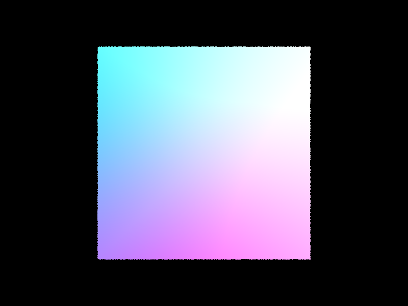 |
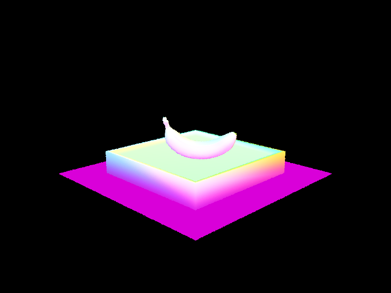 |
Part 2: Bounding Volume Hierarchy
BVH construction
- I implemented
BVHAccel::construct_bvh(start, end, max_leaf_size)insrc/scene/bvh.cpp. It walks the primitive range once and expands two boxes: the primitive bounding box stored in the node and the bounding box of the primitive centroids. If the count is at mostmax_leaf_size(16), the node becomes a leaf that stores the[start, end)iterator range. - Otherwise I split on the widest centroid axis (the axis with the largest centroid-box
extent) at the midpoint of the centroid box.
std::partitionsends centroids below the split left and the rest right, and I built both children recursively. This spatial-median heuristic needs one centroid box and one linear partition per node. If the partition is degenerate, I sort by centroid and split at the median so the recursion terminates.
Bounding box and BVH traversal
- I implemented
BBox::intersectinsrc/scene/bbox.cppwith the slab method. For each axis, withinv = 1/d, I computedt_near = (min - o) * invandt_far = (max - o) * inv, swapped them if needed, and narrowed the interval witht0 = max(t0, t_near)andt1 = min(t1, t_far). An empty interval (t0 > t1) was a miss. A ray parallel to a slab (infiniteinv) could only hit if its origin lay inside that slab. - I made traversal recursive. Every call first tested the node box against the current
[min_t, max_t]and returned on a miss. At a leaf,has_intersectionreturned as soon as any primitive was hit, whileintersecttested all primitives and kept the closest. The closest-hit version pruned implicitly because each successful primitive intersection shrankray.max_t, so later box and primitive tests discarded anything farther away.
Large scenes renderable only with BVH
- I rendered the large scenes with
./pathtracer -t 8 -r 800 600 -f <name>.png ../dae/<path>/<scene>.dae.
|
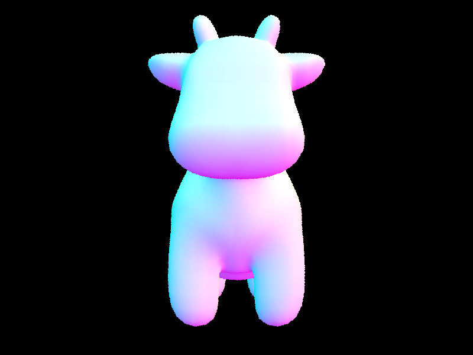 |
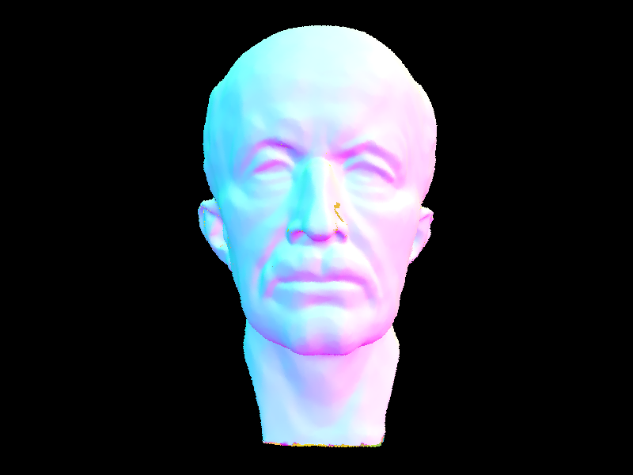 |
|
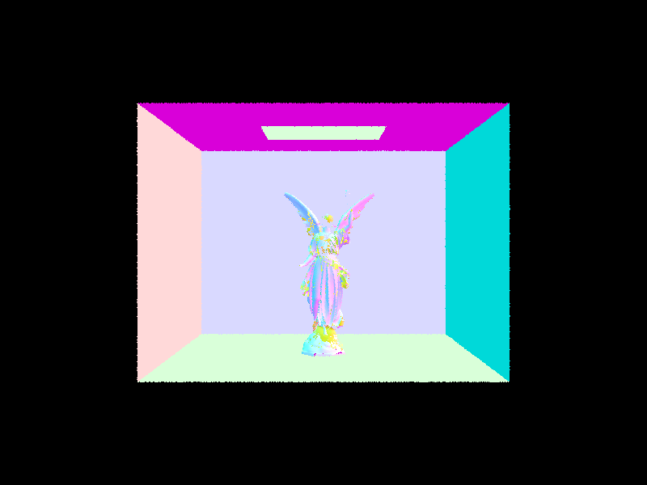 |
|
Timing analysis
- I measured render time with the original one-node BVH and with my BVH, using the same scenes and settings.
| Scene | Without BVH | With BVH | Speedup |
|---|---|---|---|
| cow.dae | 8.20 s | 0.109 s | 75× |
| maxplanck.dae | 212.78 s | 0.169 s | 1261× |
| CBlucy.dae | 381.94 s | 0.077 s | 4986× |
- The one-node baseline tested every primitive for every ray, so its cost scaled with the primitive count and grew slightly superlinearly because the per-ray loop streamed a large array through the cache. The BVH pruned whole subtrees with cheap AABB tests and brought the primitive tests per ray down to roughly 1–4 (1.09 for CBlucy and 3.38 for cow). The speedup therefore grew with scene complexity: 75× for the 5.9k-primitive cow, 1261× for the 51k-primitive maxplanck, and 4986× for the 134k-primitive CBlucy. All timings were 800×600 at 1 spp with the default single thread.
Part 3: Direct Illumination
Uniform hemisphere sampling
- I implemented
DiffuseBSDF::f(wo, wi)to returnreflectance / PIfor directions in the local hemisphere, andzero_bounce_radianceto returnisect.bsdf->get_emission(). The emission term is why the Cornell-box light source appears white. - I implemented
estimate_direct_lighting_hemisphereby drawingnum_samples = ns_area_light * num_lightsdirections uniformly over the hemisphere. I built the local-to-world frame withmake_coord_space, sampledw_inlocally with pdf1/(2*PI), transformed it witho2w, and cast a shadow ray withmin_t = EPS_Fto avoid self-intersection. For unoccluded paths I addedf(w_out, w_in) * L_in * w_in.z / pdfand averaged over the samples. Only directions that reached a light contributed, so most samples were wasted.
Importance sampling lights
- I implemented
estimate_direct_lighting_importanceby looping overscene->lights. Delta lights have no area, so I used one sample and integrated them exactly; area lights usedns_area_lightsamples.light->sample_L(hit_p)returned the emitted radiance, the directionwi, the distance, and the pdf. I transformedwiwithw2o, skipped it ifw_in.z <= 0, and cast a shadow ray withmin_t = EPS_Fandmax_t = distToLight - EPS_Fso the light was not its own occluder. For unoccluded paths I addedf(w_out, w_in) * radiance * w_in.z / pdfand averaged over that light's samples.
Results for both methods
- Figures 8 and 9 show
CBbunny.daerendered at-s 64 -l 32 -m 6 -r 480 360with hemisphere sampling and with light sampling.
|
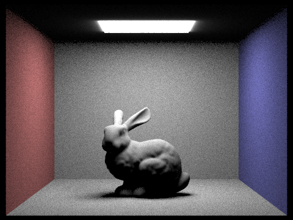 |
|
Noise vs light rays (-s 1, light sampling)
- Figures 10 through 13 show light sampling on
CBbunny.daeat-s 1with-lequal to 1, 4, 16, and 64.
Compare uniform hemisphere and lighting sampling
- Uniform hemisphere sampling wasted most rays because the light subtended a small solid
angle: at the same sample count it was much noisier, and it did not concentrate work near
the light. Importance sampling sent every ray toward a light, so the variance at a fixed
sample count was much lower. In the
-s 1sweep the soft shadow was very noisy at-l 1and nearly smooth by-l 64, even with one camera sample per pixel.
Part 4: Global Illumination
Indirect lighting
- I implemented
DiffuseBSDF::sample_f(wo, &wi, &pdf)to draw a cosine-weighted direction from the hemisphere sampler, write it towiand its pdf topdf, and returnf(wo, wi) = reflectance/PI. The cosine weighting cancels thecos(theta)in the estimator, so the recursive weight is essentiallyf / pdf. - I implemented
at_least_one_bounce_radiance(r, isect). It builds the local frame, computes the hit point andw_out, and adds the direct termone_bounce_radiancewhen the current bounce belongs in the result (always in accumulated mode, only the last allowed bounce for-o 0). It stops atr.depth <= 1. Otherwise it samples a new direction, rejects invalid samples (pdf <= 0orw_in.z <= 0), starts the next ray atmin_t = EPS_Fto avoid self-intersection, recurses, and addsf * w_in.z / (pdf * survival)times the incoming radiance. The camera ray starts atdepth = max_ray_depthand each call decrements it. - With
-o 0only the term atdepth == 1survives, so each image shows the last bounce. With-o 1every bounce along the path is summed, which I used for the final images. Because the direct term is added at the current hit,-m 1is direct lighting,-m 2adds one indirect bounce, and so on. - After a path has made at least one indirect bounce
(
r.depth < max_ray_depth), it continues with probabilityp = 0.7and terminates with probability0.3. A surviving path is multiplied by1/p. This is unbiased because the expected contribution isp * (L/p) + (1-p) * 0 = L. I did not apply RR to the camera ray's first indirect bounce, so-m 2could not randomly become direct-only. In my CBspheres test-m 5took 22.8 s and-m 100took 25.8 s, and the images were visually identical because RR terminated most paths after a few bounces.
Global illumination results (1024 spp)
- Command:
./pathtracer -t 8 -s 1024 -l 4 -m 5 -r 480 360 -f part4_global.png ../dae/sky/CBbunny.dae - Figure 14 shows full global illumination. The red and blue wall colors reach the rabbit, floor, and ceiling through interreflection, the ceiling is lit only by bounced light, and the contact shadow is filled by indirect light.
Direct-only vs indirect-only (1024 spp)
- To isolate the two contributions I temporarily skipped the direct term only on the camera-hit surface, so deeper hits still added direct lighting and only light that had scattered at least once remained. Direct-only was the one-bounce result (emission plus direct lighting).
- Direct-only had hard, dark shadows, a black ceiling, and no color bleeding. Indirect-only was dimmer and softer, but it is where the color bleeding and the brightened contact shadows came from. The full GI image was the sum of the two.
 |
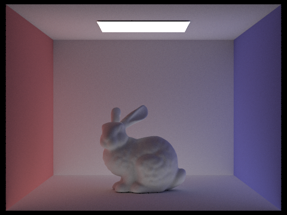 |
Bounce comparison (CBbunny, 1024 spp)
- I rendered
CBbunny.daeat-s 1024 -l 4 -o 0form = 0..5(Figures 17–22) and at-o 1for the same depths (Figures 23–28). - In the unaccumulated set,
m=0showed only emission (the light),m=1was direct lighting, andm=2was the first indirect bounce, where the red and blue color bleeding and the brighter corners first appeared.m=3and beyond added progressively smaller corrections because each extra bounce carried less energy, so the change fromm=4tom=5was subtle. - The accumulated set summed bounces
0..m, so it brightened monotonically andm=5matched the full GI result. Compared with rasterization, which typically approximates only direct light plus a constant ambient term, the second and third bounces produced the color bleeding, the lit ceiling, and contact shadows that were not pure black.
Unaccumulated (-o 0), Figures 17–22:
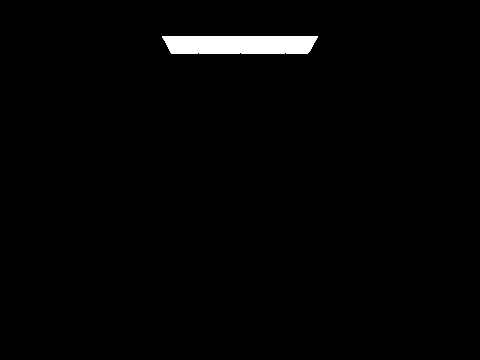 |
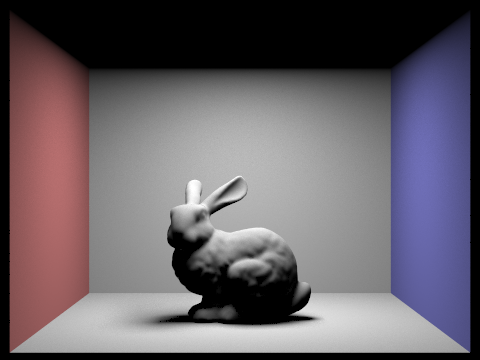 |
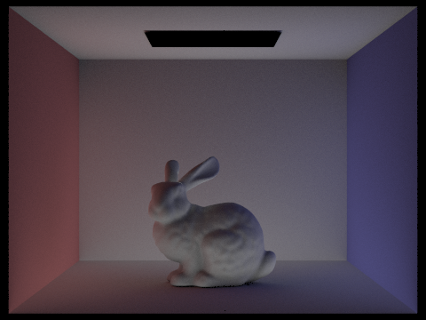 |
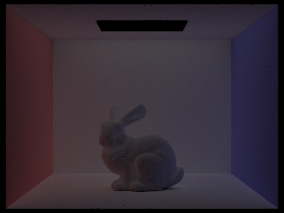 |
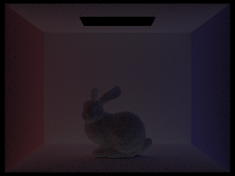 |
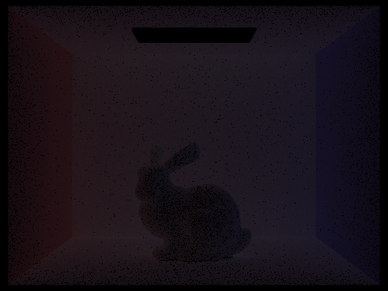 |
Accumulated (-o 1), Figures 23–28:
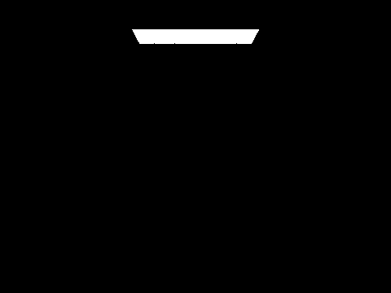 |
||
CBunny.dae with Russian Roulette
- Figures 29 through 34 show
CBbunny.daeat-s 1024 -l 4with-mequal to 0, 1, 2, 3, 4, and 100. m=100was visually identical tom=4andm=5but did not take 100 bounces per path because RR killed most paths after a few bounces.
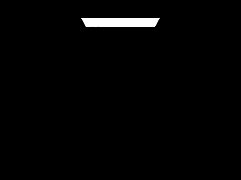 |
||
Sample-per-pixel sweep (4 light rays)
- Figures 35 through 41 show
CBbunny.daeat-l 4 -m 5with-sequal to 1, 2, 4, 8, 16, 64, and 1024. - The images went from very noisy at
s=1to clean ats=64and reference quality ats=1024. Monte Carlo noise fell roughly as1/sqrt(s), so each doubling of the sample count cost 2× time but reduced the noise by only about 1.41×.
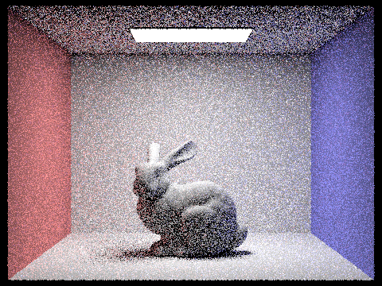 |
|||
 |
Part 5: Adaptive Sampling
Adaptive sampling algorithm
- Adaptive sampling stops a pixel once its estimate has converged instead of spending the
same fixed budget on every pixel. In
raytrace_pixelI accumulated each sample's illuminancex_k = radiance.illum()intos1 = sum(x_k)ands2 = sum(x_k^2), and countedn. EverysamplesPerBatchsamples (32 by default; I guarded against a zero batch size) I computedmu = s1/n,sigma^2 = (s2 - s1^2/n)/(n-1), andI = 1.96*sqrt(sigma^2/n), and stopped whenI <= maxTolerance*mu(defaultmaxTolerance = 0.05). Iis the half-width of a 95% confidence interval for the pixel mean, so the test asked whether the interval was within 5% of the mean. With-a,-sbecame the maximum sample count. The final color wasL/n, and I stored the actualninsampleCountBufferso the framework could write the_rate.pngheat map (red for many samples, blue for few).
Results
- I rendered both scenes with
-s 2048 -a 64 0.05 -l 1 -m 5 -r 480 360. CBbunny took about 53 s and CBspheres_lambertian about 57 s with 8 threads. - Both renders were noise-free at 2048 maximum samples. The rate images showed that the sampler concentrated work on silhouettes, the rabbit's contact shadow, the sphere edges, and the corners of the box (red), while the flat, well-lit walls used few samples (blue).
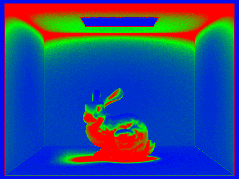 |
|
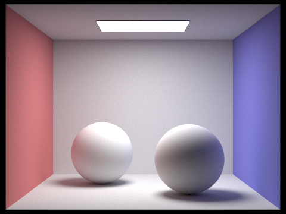 |
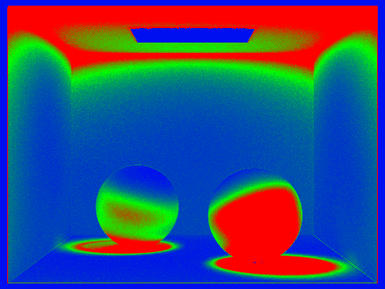 |
Optional Extra Credit
- Not attempted.
Acknowledgement of AI
I used an AI coding assistant (opencode) for scripting the batch of renders used for the figures. I reviewed all resulting code and images myself.